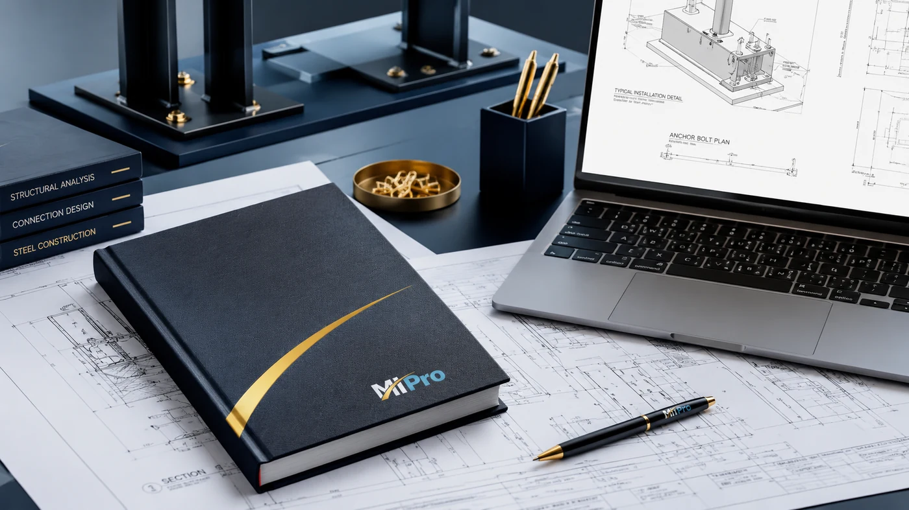

Odpowiedzialność techniczna
Decyzje projektowe i wykonawcze oceniamy pod kątem montażu, użytkowania, odbioru oraz późniejszego serwisu.
HVAC • klimatyzacja • instalacje sanitarne
Wspieramy inwestorów, firmy wykonawcze i klientów prywatnych w realizacji instalacji wentylacyjnych, klimatyzacyjnych, grzewczych, chłodniczych oraz wodno-kanalizacyjnych. Od analizy dokumentacji po wykonanie, uruchomienie i odbiór.

Decyzje projektowe i wykonawcze oceniamy pod kątem montażu, użytkowania, odbioru oraz późniejszego serwisu.
Zakres, materiały, harmonogram i ustalenia techniczne prowadzimy w sposób uporządkowany i czytelny dla inwestora.
Zwracamy uwagę na prowadzenie instalacji, dostęp serwisowy, estetykę wykonania i jakość zakończenia prac.
Zakres usług
MI-PRO łączy praktykę wykonawczą z technicznym podejściem do dokumentacji, kosztów i koordynacji. Głównym zakresem jest realizacja instalacji; opinie, nadzory i optymalizacje są dodatkowym wsparciem dla wymagających inwestycji.
Wentylacja mechaniczna, klimatyzacja, VRF, instalacje grzewcze i chłodnicze, wod-kan oraz źródła ciepła.
Montaż klimatyzacji w domach, apartamentach, biurach i lokalach usługowych, z naciskiem na estetykę i komfort użytkowania.
Analiza dokumentacji, opinie techniczne, audyty, konsultacje wykonawcze i wsparcie w sporach technicznych.
Koordynacja instalacji, optymalizacja rozwiązań, weryfikacja kosztów oraz kontrola jakości wykonania.
Dlaczego MI-PRO
Nie komplikujemy rozwiązań bez potrzeby. Szukamy instalacji trwałych, racjonalnych kosztowo i możliwych do poprawnego wykonania.
Decyzje techniczne oceniamy nie tylko na podstawie projektu, ale także pod kątem montażu, eksploatacji, odbioru i serwisu.
Klient otrzymuje partnera odpowiedzialnego za koordynację zakresu, komunikację i jakość wykonania.
Wskazujemy rozwiązania, które mają sens techniczny, kosztowy i organizacyjny na etapie realizacji.
Dbamy o przebieg tras, dostęp do serwisu, estetykę, dokumentację i jakość końcowego odbioru.
O nas
MI-PRO zostało stworzone przez Łukasza Miszczyka, inżyniera i menedżera z wieloletnim doświadczeniem w realizacji instalacji HVAC i sanitarnych. Doświadczenie obejmuje prowadzenie procesów wykonawczych, koordynację zespołów, współpracę z projektantami, inwestorami i generalnymi wykonawcami, a także rozwiązywanie problemów technicznych na etapie realizacji i odbiorów.
Jak pracujemy
Weryfikujemy dokumentację, potrzeby inwestora i warunki techniczne.
Porównujemy warianty techniczne, koszty i możliwości wykonania.
Ustalamy harmonogram, materiały, koordynację i organizację prac.
Kontrolujemy jakość, prowadzimy bieżące uzgodnienia i odpowiadamy za zakres.
Sprawdzamy działanie, regulujemy instalację, porządkujemy dokumentację i przekazujemy zakres.
Typy inwestycji
Wspieramy klientów prywatnych, firmy i inwestorów realizujących bardziej złożone zakresy instalacyjne.
Montaż klimatyzacji Kielce
Dobieramy urządzenia nie tylko pod względem mocy. Uwzględniamy akustykę, estetykę, lokalizację jednostek, sposób prowadzenia instalacji i dostęp serwisowy.
Zapytaj o klimatyzacjęWsparcie techniczne i opinie
Celem opinii nie jest tworzenie rozbudowanych dokumentów bez praktycznej wartości. Każde opracowanie powinno prowadzić do jednoznacznych wniosków, możliwych działań i oceny odpowiedzialności technicznej.
Problemy, które pomagamy rozwiązać
Opinie klientów
Bardzo dobry kontakt, rzeczowa analiza i jasne wskazanie rozwiązań. Wszystko zostało wykonane zgodnie z ustaleniami.
Konkretne podejście do dokumentacji i wykonania. Otrzymaliśmy czytelne wnioski oraz propozycje dalszych działań.
Kontakt
Napisz, jakiego zakresu dotyczy temat: wykonawstwo instalacji, montaż klimatyzacji w Kielcach, opinia techniczna, nadzór lub optymalizacja dokumentacji. Wrócimy z informacją, czy możemy pomóc oraz jakie dane będą potrzebne do dalszej analizy.